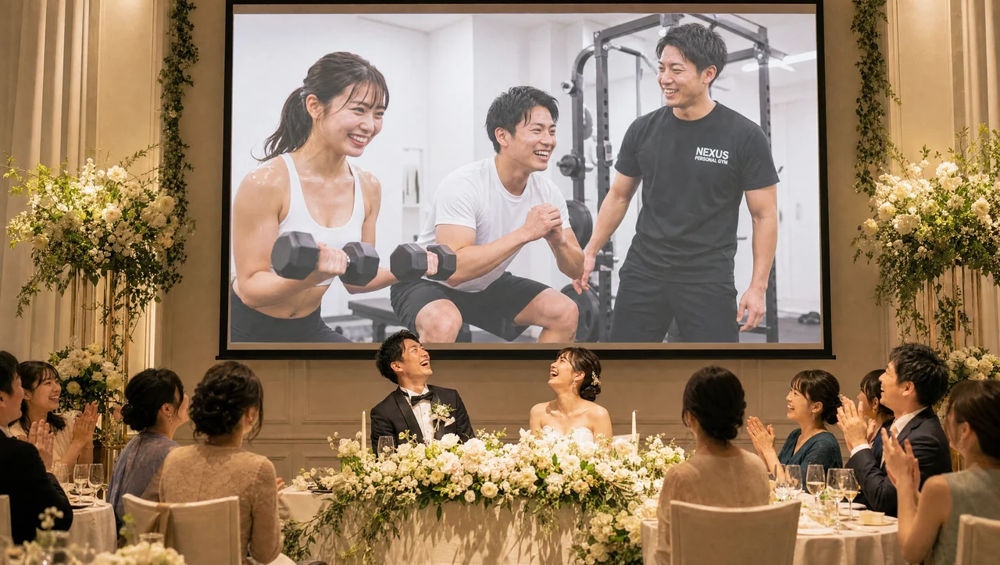

NEXUS Personal Gym ／ 神奈川県横浜市栄区
NEXUSパーソナルジム 大船店｜帰り着く前に鍛える完全個室ジム

横浜市栄区笠間、JR5路線が乗り入れる大船駅から通いやすい完全個室パーソナルジムです。大船は東海道線・横須賀線・根岸線・湘南新宿ラインなどが集まる湘南エリアのターミナル。東京・横浜方面からお勤めの方にとっては「家に着く前に必ず通る駅」です。だからこそ大船店は、帰宅の途中で降りて鍛えて帰る——生活の動線の中に無理なくトレーニングを組み込める立地が最大の魅力。しかも店舗は1階の路面区画にあり、階段やエレベーターを使わずそのまま入れる気軽さがあります。オープンしたばかりの今は、予約が取りやすく、一人のトレーナーがあなたにじっくり向き合える贅沢な時期。オープニングメンバー（一期生）として、トレーナーと関係を築きながらスタートできます。ウェア・タオル・ドリンク・プロテインまで全部込みのアメニティ完備で、手ぶら通いOK。毎日8:00〜23:00・LINE予約で、仕事帰りにも朝トレにも対応します。全国約70店舗・会員継続率96%のNEXUSブランドの指導を、湘南のターミナル・大船で。
- ブライダル対応
- 完全個室
- JR5路線・大船駅
- 1階路面区画
- 帰宅動線に組み込める
- 手ぶら通いOK
- NEXUS全国約70店舗
この店舗の特徴
NEXUS大船店は、横浜市栄区笠間にある完全個室パーソナルジム。JR東海道線・横須賀線・根岸線・湘南新宿ラインなど5路線が乗り入れる、湘南エリア屈指のターミナル・大船駅から通いやすい立地です。この店舗のいちばんの特徴は、「帰宅の動線の中でトレーニングが完結する」ということ。東京・横浜方面へ通勤される多くの方にとって、大船は家に着く前に必ず通る駅です。だからこそ、仕事帰りにひと駅早く降りるような感覚で立ち寄り、鍛えてそのまま帰宅する——という通い方が自然にできます。パーソナルジムを続けるうえで最大の壁は「わざわざ通う」という手間ですが、大船店ならその手間がありません。もともと通る駅で降りるだけなので、生活のリズムを崩さずにトレーニングを習慣にできます。さらにもう一つの魅力が、1階の路面区画にあること。階段やエレベーターで上の階まで上がる必要がなく、道路からそのまま入れるので、「思い立ったら入れる」気軽さがあります。荷物が多い日でも、仕事で疲れた日でも、入り口までのハードルが低いことは、続けやすさに直結します。そしてオープン直後の今なら、会員がまだ増えすぎていないため、希望の時間帯で予約が取りやすく、トレーナーもあなた一人にじっくり時間をかけられます。もちろん新店でも指導品質に不安はありません。全トレーナーが3ヶ月の自社教育プログラムを修了し、全国約70店舗・会員継続率96%のNEXUSブランドの基準を満たしています。完全個室のマンツーマンだから、周りの目を気にせず自分のペースで。予約はLINEでサッと完結します。
5路線が集まる駅だから、続けやすい

パーソナルジムが続くかどうかは、「通いやすさ」でほとんど決まります。どんなに良いジムでも、自宅や職場から離れていて、専用に時間を作らないと通えない場所だと、忙しい日はつい足が遠のいてしまうものです。その点、大船店は圧倒的に有利な立地にあります。大船駅はJR東海道線・横須賀線・根岸線・湘南新宿ラインなど5路線が乗り入れる湘南エリアのターミナル。東京方面、横浜方面、鎌倉・逗子方面と、あらゆる方向とつながっているため、多くの方にとって「通勤・通学で必ず経由する駅」になっています。つまり、わざわざジムのために遠回りする必要がなく、いつもの帰り道の途中でそのまま立ち寄れるということ。「家に着く前のひと駅」で降りて鍛え、そのまま帰宅する——この動線が組めるかどうかで、継続率はまったく変わってきます。しかも大船店は毎日8:00〜23:00の営業。帰りが遅くなりがちな方でも、夜の時間帯にしっかりトレーニングできます。逆に朝8:00から開いているので、出勤前の朝トレとして使うこともできます。週末にまとまった時間を確保しなくても、平日の帰り道に週2回立ち寄るだけで、トレーニングは習慣になります。予約・変更はLINEで完結し、6時間前まで無料でキャンセルできるので、急な残業や予定変更にも柔軟です。「通おうと思っても続かなかった」という方こそ、生活動線に溶け込む大船店の通いやすさを体感していただきたいと思います。
オープン直後の、今だけの通いやすさ

新しくオープンした店舗には、その時期ならではの大きなメリットがあります。それが「予約の取りやすさ」と「トレーナーとの距離の近さ」です。大船店は2026年にオープンしたばかりの新店。会員がまだ増えすぎていない今だからこそ、朝の時間でも仕事帰りの夜でも、希望の時間帯で予約を取りやすい環境が整っています。人気のパーソナルジムでは「予約が取りにくくて通いづらい」という声もありますが、オープン直後の大船店なら、その心配がほとんどありません。さらに、この時期に入会される方は、いわば大船店の「一期生」。トレーナーがあなた一人にじっくり時間をかけられるので、身体の状態や目標、生活習慣をきめ細かく把握してもらいながら、丁寧にスタートを切れます。オープニングメンバーとしてトレーナーと関係を築いていく時間は、後から入会する方には得られない、今だけの特別な体験です。「パーソナルジムは気になっていたけれど、なかなか一歩を踏み出せなかった」——そんな方にとって、通い慣れた大船駅に新店ができた今は、始めるのに絶好のタイミング。予約が取りやすく、じっくり向き合ってもらえる今のうちに、ぜひ無料体験にお越しください。オープン直後のゆとりある環境で、あなたの身体づくりを気持ちよくスタートできます。
1階だから、思い立ったら入れる

大船店は、1階の路面区画にあります。これは通いやすさの面で、意外なほど大きなメリットです。ビルの上階にあるジムだと、エレベーターを待ったり階段を上ったりと、入り口にたどり着くまでにひと手間かかります。その小さな手間が積み重なると、「今日は疲れているからいいや」と足が遠のく原因になりがちです。大船店なら、道路からそのまま入れるので、思い立った瞬間にサッと立ち寄れます。仕事帰りにスーツのまま、買い物袋を提げたまま、気軽に入れる気軽さが、続けやすさを支えます。そして通いやすさをさらに後押しするのが、充実したアメニティです。大船店では、ウェア・水・タオル・プロテインまですべて無料でご用意しています。だから、持ち物は通勤バッグひとつ、手ぶらのまま立ち寄れます。「トレーニングのために大きなバッグを持ち歩くのが面倒」「仕事帰りに寄りたいけれど荷物が増えるのが嫌」——そんな理由でジム通いをためらっていた方も、大船店なら気軽に通えます。仕事帰りに立ち寄って、着替えてトレーニング、シャワーを浴びて帰る。そんな使い方が自然にできます。トレーニング後には、無料のプロテインで栄養補給も。運動後のたんぱく質補給は、筋肉の回復と成長にとって大切なひと手間ですが、それも準備なしでその場で完結します。毎日8:00〜23:00の営業なので、朝活としても、仕事帰りの習慣としても、あなたの生活リズムに合わせて通えます。予約・変更はLINEで完結し、6時間前まで無料でキャンセルできるので、急な予定変更にも対応しやすい設計です。1階・手ぶら・LINE予約——そのすべてが、無理なく続けるための工夫です。
鎌倉・湘南ライフの体力づくり
大船が位置する湘南エリアは、鎌倉の山々でのハイキングや、海でのマリンアクティビティなど、自然の中で体を動かすレジャーが身近にある土地柄です。せっかく恵まれた環境にいるのだから、休日にはもっとアクティブに過ごしたい——そう考える方にとって、パーソナルトレーニングは頼もしい味方になります。ハイキングで長く歩いても疲れにくい脚づくり、山道の上り下りに耐える体幹、サーフィンやSUPを楽しむためのバランス感覚と筋力。こうした「遊びを楽しむための基礎体力」は、日常のトレーニングで着実に高めていけます。NEXUS大船店では、一人ひとりの目的や体力レベルに合わせて、トレーナーがオーダーメイドでメニューを組み立てます。「見た目を引き締めたい」というボディメイク目的はもちろん、「湘南ライフをもっと楽しみたい」「趣味のアウトドアで疲れにくい体になりたい」といった目的にも、しっかり寄り添えるのがパーソナルジムの強みです。完全個室のマンツーマン指導なので、運動が久しぶりの方でも、周りの目を気にせず自分のペースで進められます。姿勢や身体のクセを一人ひとり丁寧に見ながら、無理のない範囲で少しずつ強くしていく。だから体を痛めるリスクも抑えられます。鎌倉・湘南の暮らしを、もっと軽やかに、もっとアクティブに。その土台となる体づくりを、大船店でお手伝いします。
NEXUSブランドの実績
大船店はオープンしたばかりの新店のため、まだGoogleマップの口コミは集まっていません（現在収集中です）。しかし、指導の品質を裏づけるのは、NEXUSブランド全体で積み上げてきた実績です。NEXUSは全国約70店舗を展開し、会員継続率は96%。全トレーナーが3ヶ月の厳しい自社教育プログラムを修了してからデビューし、「優しく寄り添う指導」を全店共通の基準としています。大船店のトレーナーも、同じ教育を受けたメンバーです。
同じ横浜市内の系列店では、横浜元町店がGoogle口コミ★5.0（87件）、岸根公園店が★5.0（53件）、綱島店が★5.0（31件）という高い評価をいただいています（2026年7月時点）。これらの評価は、ブランド全体で共有される指導品質の証です。大船店も、この同じ基準でみなさまをお迎えします。
新店だからと不安に思う必要はありません。むしろオープン直後の今は、予約が取りやすく、一人のトレーナーがあなたにじっくり向き合える贅沢な時期です。全国で培った確かな指導を、できたばかりの大船店で、ゆとりある環境で受けられます。まずは無料体験で、トレーナーの質とジムの雰囲気を、あなた自身の目で確かめてみてください。大船店の最初のメンバーとして、一緒にこの店舗を育てていける今を、ぜひ楽しんでいただければと思います。
まずは無料体験から
「大船で完全個室のパーソナルジムを探していた」「仕事帰りの動線で通えるジムが欲しかった」「新しくできたジムが気になる」——そんな方こそ、まずは無料体験からお試しください。大船店の無料体験は、カウンセリングであなたの目標や運動経験、生活習慣をじっくり伺うところから始まります。その上で、姿勢や身体のクセをチェックし、実際にトレーニングを体験。フォームを丁寧に確認しながら進めるので、運動が久しぶりの方でも安心です。オープン直後の今なら予約も取りやすく、トレーナーがあなたにたっぷり時間をかけられます。体験も手ぶらでOK。ウェア・タオル・ドリンクもすべてご用意しているので、仕事帰りや買い物の合間に、そのままお立ち寄りいただけます。JR5路線が集まる大船駅から通いやすく、1階路面区画で入りやすい。無理な勧誘は一切ありません。湘南のターミナル・大船で始めるNEXUSの一期生として、気持ちのいいスタートを切りませんか。まずは気軽に、無料体験へお越しください。
Price料金プラン
入会金は通常55,000円、無料体験当日入会で15,000円（税込）に割引。AI食事指導は月額3,000円（税込）。全店舗共通の料金です。
Bridal結婚式前のボディメイクにも対応
大船店では、挙式日から逆算した結婚式前のボディメイクにも対応しています。背中・二の腕・デコルテ・ウエストなど、ドレスで視線が集まる部位を完全個室のマンツーマンで整えます。挙式日から逆算した90日・60日プランで、式当日にピークを合わせます。
挙式日からの逆算タイムライン｜ブライダル専用ページを見るこの店舗のブライダル対応をくわしく

「ドレスの試着で二の腕が気になった」「背中の開いたデザインを、体型を理由に諦めたくない」——挙式という動かせない期日があるからこそ、ボディメイクは最後までやり切れます。大船店では、まず挙式日とドレスのデザインをうかがい、背中・二の腕・デコルテ・ウエストという、ドレスでもっとも視線が集まる部位から優先順位をつけていきます。完全個室のマンツーマンだから、人目を気にせず自分の身体とだけ向き合えます。

残された日数によって、やるべきことは変わります。大船店では挙式日から逆算した90日プラン・60日プランを用意し、「いつまでに、どの部位を、どこまで」を最初に設計します。極端な食事制限で当日フラフラ……ということがないよう、その日のコンディションから逆算する無理のない指導で、式当日にピークを合わせます。会員の約85%が女性で、ブライダルのご相談は日常的。体に不必要に触れないノータッチ指導を基本にしているので、はじめての方も安心です。

週を追うごとに、ドレスの試着で鏡に映る自分が変わっていきます。背中がすっと伸び、二の腕のたるみが引き締まり、デコルテに華やかさが出る。「このデザインで大丈夫かな」から「このドレスを選んでよかった」へ——目標が数字ではなく“当日の自分の姿”だからこそ、モチベーションが途切れません。大船エリアで挙式を予定されている方は、エリア内の式場への下見や打ち合わせの動線に、そのままトレーニングを組み込めます。

迎えた挙式当日。積み重ねた90日・60日は、鏡の前の安心感になって返ってきます。姿勢よく背筋を伸ばして立ち、写真のどの角度でも堂々といられる——それは、頑張ってきた自分だけが手にできる自信です。大船店は、その一日のために全力で伴走します。

挙式は、新しい生活のスタートでもあります。せっかく作り上げた身体を、そのまま新生活の習慣に。大船店は毎日8:00〜23:00営業・月4回18,000円（1回4,500円〜）から続けられるので、挙式後の体型維持から、将来の産後の体型戻しまで長く伴走できます。全国約70店舗のネットワークがあるため、引っ越しや里帰りの際も最寄り店舗へ。「一生に一度」のために始めた習慣が、その後の人生を支える土台になります。
挙式まで残り80日で駆け込みました。背中の開いたドレスに合わせて、二の腕と背中を中心にプランを組んでもらい、当日は自信を持って写真に写れました。式後もそのまま通っています。
上記はサービス内容をわかりやすく伝えるためのモデルケース（イメージ）であり、実在するお客様の口コミではありません。Google口コミは本ページ内の該当セクションに実際の内容を要約して掲載しています。
挙式日からの逆算タイムライン｜ブライダル専用ページを見るアクセス
- 店舗名
- NEXUSパーソナルジム 大船店
- 住所
- 〒247-0006
神奈川県横浜市栄区笠間2-20-7 K.C笠間1階 - 最寄り駅
- JR 大船駅
- 営業時間
- 毎日 8:00〜23:00
- 電話番号
- 050-1790-8499
大船店のよくある質問
Q大船駅の近くに完全個室のパーソナルジムはありますか？+
Q仕事帰りに通いたいのですが何時まで営業していますか？+
Q鎌倉・北鎌倉方面からも通えますか？+
Q挙式まで3ヶ月ですが、結婚式に間に合いますか？+
Qドレスで気になる背中や二の腕を集中的に絞れますか？+
Q結婚式が終わった後も通い続けられますか？+
よくある質問（全店共通）
料金・制度などNEXUS全店に共通するご質問です。さらに詳しくは110問のFAQをご覧ください。
Q料金はいくらですか？+
Q手ぶらで通えますか？+
Qキャンセルはいつまでできますか？+
Q食事指導はありますか？+
Qトレーナーはどんな人ですか？+
Q女性会員は多いですか？+
Q体験の流れは？+
NEXUSパーソナルジムの特徴・料金をもっと見る